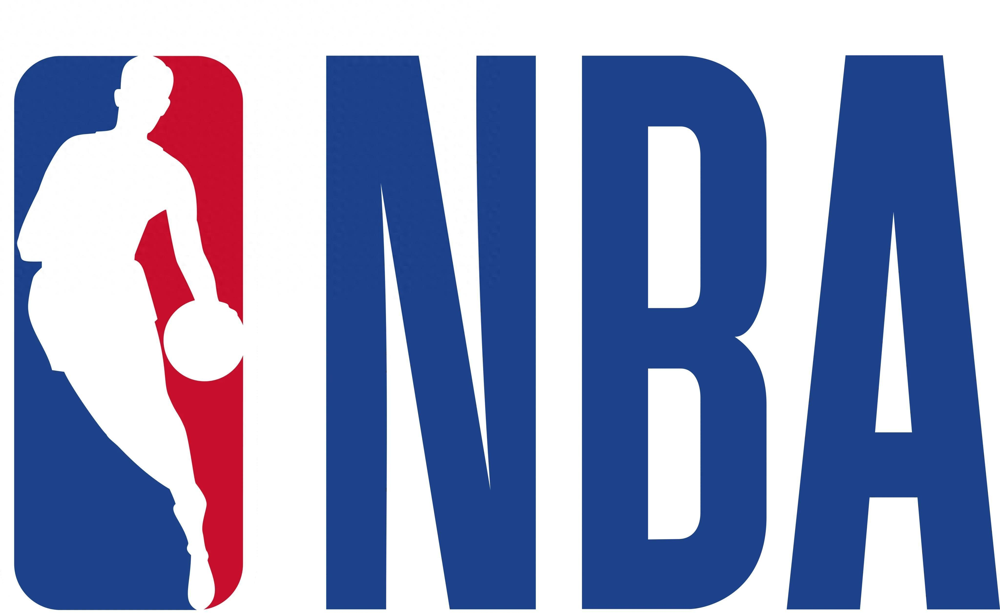

Sports PR & Event Communications
体育公关与赛事传播
Season planning, media relations, PR evaluation, content planning and on-site communications.
赛季传播规划、媒体服务、PR 复盘、内容策划和赛事现场传播。
Sports Marketing Portfolio
体育营销作品集
李梦茵 · Eva Li
Eva Li
I help sports brands, events and outdoor projects turn community experiences into meaningful brand stories.
我帮助体育品牌、赛事和户外项目，把社群体验转化为有意义的品牌故事。

About
关于我

I work across sports marketing, sports PR, event communications and outdoor community storytelling. My work connects strategic thinking with practical event delivery, from year-round communications and campaign mechanics to on-site operations and post-event analysis.
我的工作覆盖体育营销、体育公关、赛事传播和户外社群叙事。我擅长把策略思考与真实活动体验连接起来，从全年传播规划、活动机制，到现场执行支持与赛后复盘分析。
Download CV下载英文 CVCurrent Direction当前方向
Based in Shanghai · Preparing for Sport Management studies in Prague目前常驻上海 · 准备赴布拉格攻读体育管理
Education教育背景
Beijing Normal University · Education Management北京师范大学 · 教育管理
Personal Sports Profile个人运动档案
Trail running · Road cycling · Boxing越野跑 · 公路骑行 · 拳击
Certificate专业证书
Outdoor Sports Referee · Level 3三级户外运动裁判员
Selected Projects
精选项目

Year-round PR and event communications for China's official junior golf development system.
围绕中国官方青少年高尔夫人才培养体系的全年公关与赛事传播。

A nationwide launch campaign connecting product comfort, morning-running rituals and Saucony Run Club community growth.
围绕新品上市，把舒适产品利益、晨跑和城市社群激活连接起来。

A strategic proposal for public-sector stakeholders and sponsors, connecting destination value with an outdoor festival platform.
面向政府与潜在赞助商的概念提案，连接目的地价值和户外节 IP。

A three-station trail running series review translating event data, runner feedback and real terrain into actionable brand insight.
三站越野跑系列复盘，把数据、跑者反馈与真实赛道体验转化为可执行的品牌洞察。
Core Capabilities
核心能力
Season planning, media relations, PR evaluation, content planning and on-site communications.
赛季传播规划、媒体服务、PR 复盘、内容策划和赛事现场传播。
Campaign strategy, activation mechanics, participant journeys and membership conversion.
Campaign 逻辑、活动机制、参与者旅程和会员转化思路。
Outdoor event concepts, trail culture, destination value and sponsor-ready proposal development.
户外活动概念、越野文化、目的地价值和赞助商提案逻辑。
Supporting Projects
补充项目
 Long-Term Client Relationship长期客户服务
Long-Term Client Relationship长期客户服务
Long-term social media management, campaign planning and lifestyle-led brand storytelling.
长期负责社交媒体运营、品牌活动策划与生活方式内容叙事。
 Sports Event Month · Execution Proposal运动主题活动月 · 执行方案
Sports Event Month · Execution Proposal运动主题活动月 · 执行方案
End-to-end urban outdoor activation planning, from spatial design and partner participation to event-month operations and community retention.
完整的城市户外运动主题活动月方案，覆盖空间装置、品牌参与、活动运营与社群沉淀。
 Outdoor Product Campaign
Outdoor Product Campaign
Product-positioning and campaign planning for an outdoor apparel launch.
围绕户外服装新品的产品定位与 campaign 策划。

An event-operations proposal for a youth-focused basketball IP experience.
面向年轻人群的篮球 IP 活动运营方案。

Brand content development and retail activation.
品牌内容与零售激活

Sports-audience engagement and community strategy.
运动人群与社群运营策略
Experience
职业经历
Selected professional experience from 2016 onward, followed by current independent project work.
以下为 2016 年以来的精选职业经历，以及目前持续开展的独立项目工作。
Strategy, campaign planning and post-event analysis across running, outdoor, destination and active-lifestyle projects, including Saucony, HOKA, National Geographic and Swiss Military.
为跑步、户外、目的地和健康运动项目提供策略、campaign 策划与复盘分析，合作项目包括 Saucony、HOKA、National Geographic 与 Swiss Military。
Fourfuture Communications · Shanghai
Led year-round sports event communications, media relations, social media and on-site media center operations.
负责全年体育赛事传播、媒体关系、社交媒体与赛事现场媒体中心运营。
Shanghai
Developed proposals, campaign concepts, client presentations, branded-video and short-form video content.
负责提案开发、campaign 策划、客户演示及品牌视频与短视频内容制作。
Ebay Communications · Shanghai
Delivered social media and public relations services for sports and lifestyle brands, including CASIO and G-SHOCK.
负责体育及生活方式品牌的社交媒体与公关传播，包括 CASIO 与 G-SHOCK。
PLAYMAKER · Shanghai
Established brand positioning, marketing strategies, partnerships and resource integration for sports products and training programs.
负责运动产品与培训项目的品牌定位、营销策略、合作伙伴和资源整合。
Gymboree Play & Music · Shanghai
Planned annual integrated campaigns and supported marketing and training management across 50 offline locations.
负责年度整合营销 campaign，并为 50 家线下门店提供市场与培训管理支持。
Field Experience
赛事现场经历
English-language volunteer and athlete-services support, including race check-in and check-out, plus personal aid for elite runners.
担任英文志愿者及运动员服务支持，协助国际运动员签到、离场及精英跑者个人补给。
Chief checkpoint referee responsible for checkpoint management, rule enforcement and volunteer coordination.
担任主检查点裁判，负责点位管理、规则执行与志愿者协调。
Brands & Organizations
服务过的品牌与组织





Contact
联系